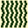
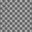
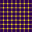
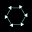
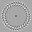
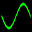
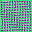
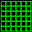
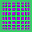

Illusions
- XLogo
These programs create visual optical illusions. Some are famous, others I've just come across by experimenting. You can of course use XLogo to alter the features of each illusion, and discover even stranger and stronger distortions.
 Cafe Wall
 Grid  Hermann Grid  Hexagon Intertwine
|
 Revolve
 Sine Spiral
 Wave
 Zollner  Zoom |
- Animation
- Art
- Cellular Auto
- Coding
- Demo
- Dot Plot
- Fractal
- Grid
- Illusion
- L-System
- Multi Turtle
- One Line
- Perspective
- Plane Filling
- Polar
- Puzzle
- Recursion
- Sound
- Spiral
- Spirograph
- Trees
- Walks